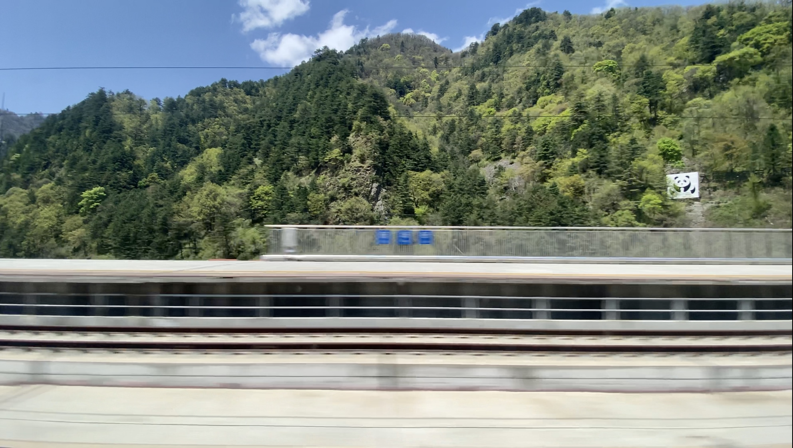
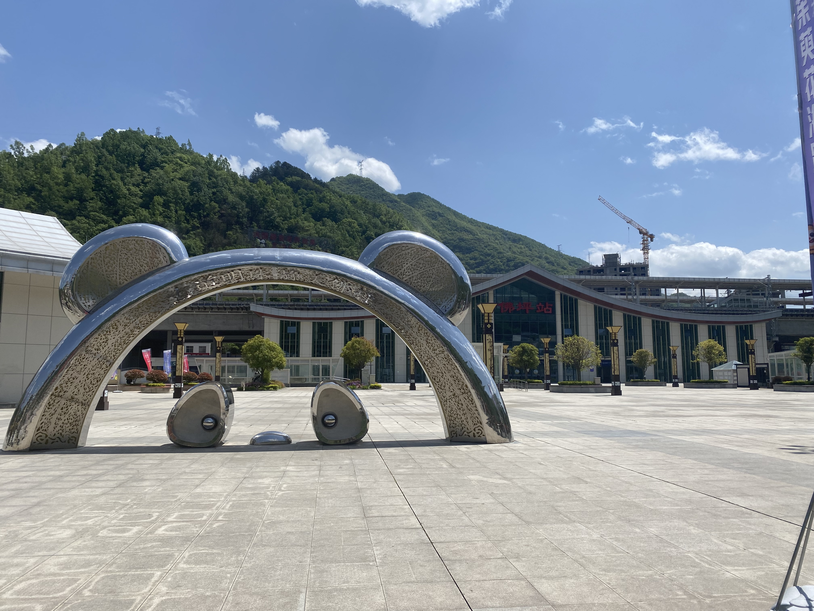
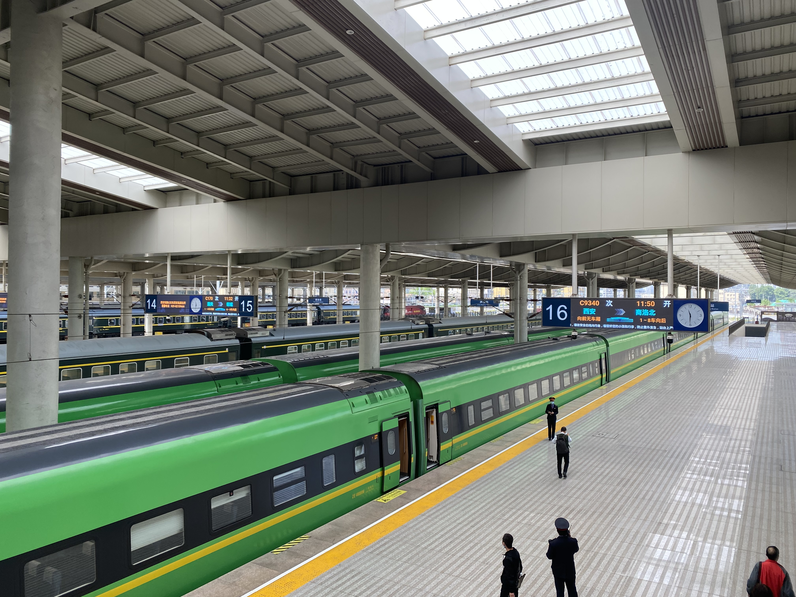
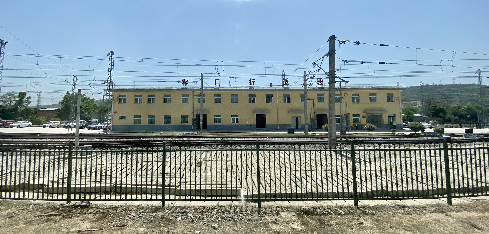
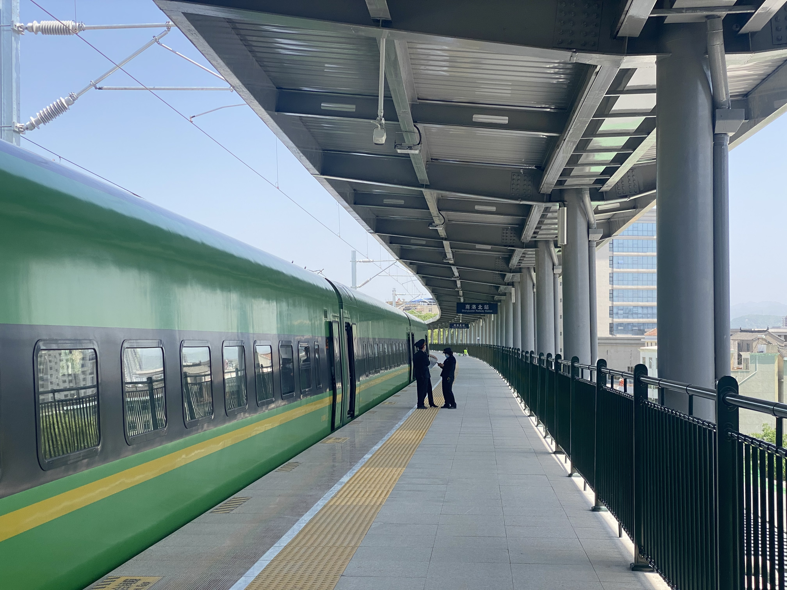
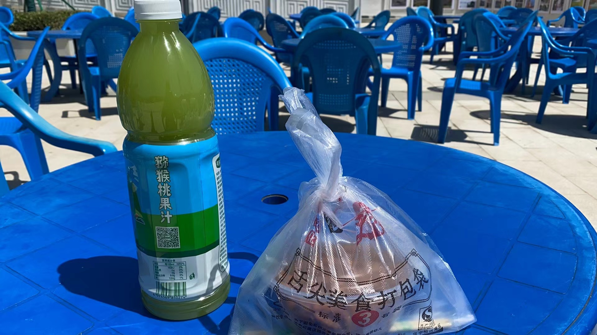
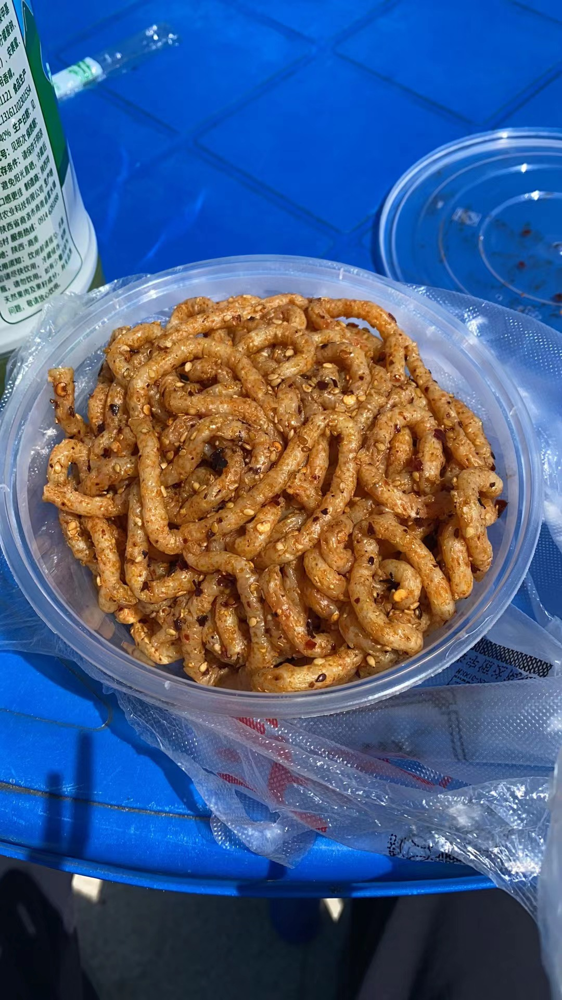
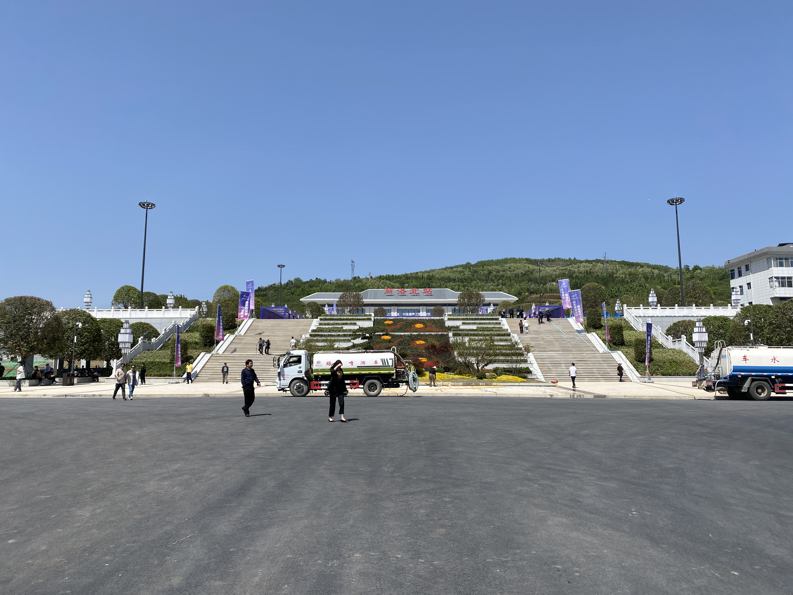
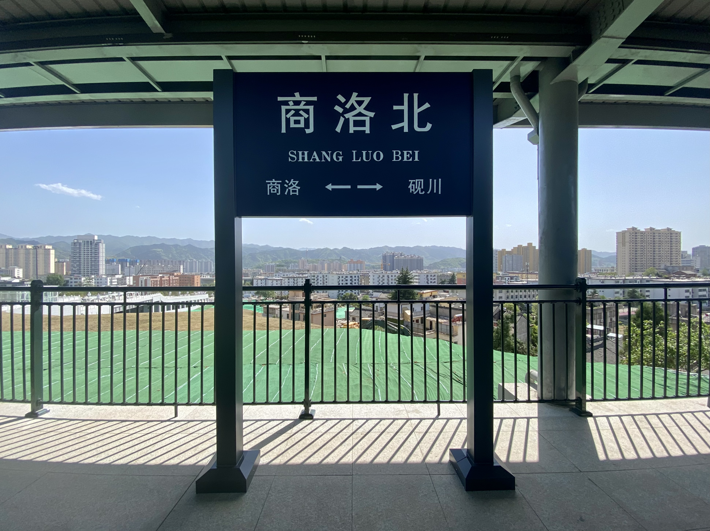
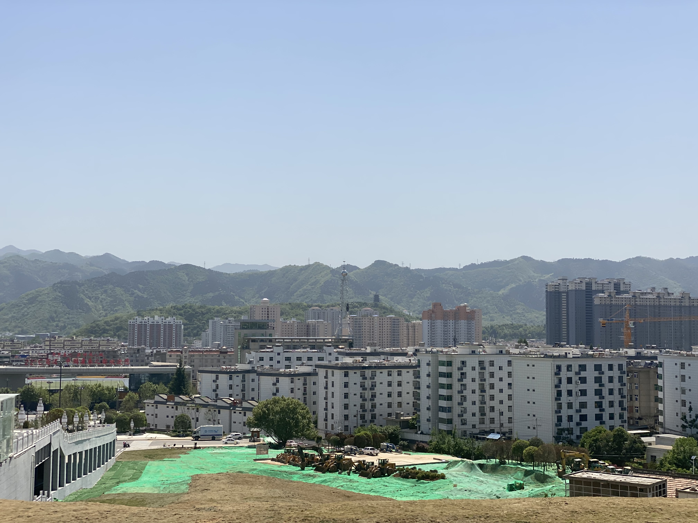

陕南东西
佛坪（2023.4.27）
去佛坪的构思纯属偶然；那天因为没有课，我并没有什么打算。只是想着能够通过从引镇只坐一站路的高速铁路偷窥新场街这座并未对外开放的待避车站。事实上也确实成功了——虽然列车行进的很快，差点没有反应过来。


佛坪站与其说是车站不如说是一座连接两个隧道的桥梁——这个车站的站台横跨椒溪河，两端都是隧道。
因为时间有限，这次去佛坪没有拜访熊猫谷。在佛坪呆了一会就回去了。

新商洛駅（2023.4.29）
商洛市民苦铁路久矣！
本地人前往商洛站是一件很困难的事——这座车站位于商洛郊区的一处村镇而不是商洛城区。游客更不必说；而奇异的是商洛站所属的宁西铁路恰有一小段穿过商洛市区，因此人们构思着在这片区域另设新站的可能。
2023年4月29日，这个可能变为了现实。此前一天我从朋友那里得知位于商洛城区的商洛北站即将在这一天通车，我当即购买了车票准备前往。当时的我还不知道商洛市政府为这个车站准备了通车仪式，毕竟在我看来这也不是新的线路，没有这个必要；在到站之后，一切都朝着超乎我想象的方向展开。
南下（C9340／1）
作为以合理使用动力集中式动车组列车闻名全国的铁路局，在通车当天为新站安排所谓的“绿巨人”对西安铁路局而言可谓是跟喝水一样简单。由于C9340中午发车的时间对学校地处偏僻的我跟为亲和，所以我并没有选择更早的那趟首班车。

虽然宁西铁路从名字上看起点和终点分别是南京和西安，但北端的起点其实是零口站。

作为需要穿过秦岭山脉的线路，宁西铁路在山区段又是连续的隧道，因此便也无趣；很快就到了商洛站。这趟列车在商洛站停靠5分钟之后折返，才向北到商洛北站；下车后发现商洛北只有一个站台，经过推理应该是因为商洛北所在的铁路线路只有向北一个方向。

这趟车在终到商洛北站之后会立即接起商洛北站的乘客向北直达西安；由于没有吃午饭，我并没有立即回去，而是出站寻觅一些吃的。
商洛北站
在去商洛之前就已经搜索过商洛当地的一些名吃；没想到今天恰逢通车日，商洛市方面主持的仪式中也包括了当地小吃的摊位。于是借此机会将最为出名的牛筋面和猕猴桃汁买了些；出乎我的想象的是，前者与其说是“牛筋+面”，不如说是“筋道如牛筋一般的面”；面的质感吃起来更像是豆制品，但是口感比较干。


吃完之后便继续向路面上走。因为宁西线北行部分在城区的铁路较高，商洛北站的站台也不得不建设得比较高——为此，商洛北站的站前广场一共分为三层；在第二层下方的漏空区域则为公交场站。

很快就回去了。回程的列车跟之前来的时候一样，也是从南侧老商洛站折返北行到这里进行上下客之后继续向北；所以从本质上来说，这些终到商洛北站的列车其实都是终到商洛站，商洛北站不过是从商洛站始发向西安方向的列车经停时间比较长的一个车站而已。

